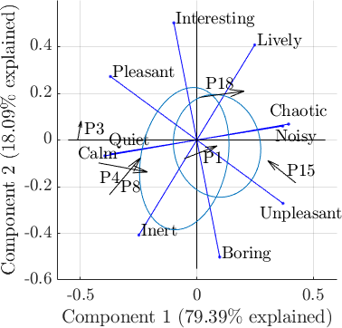
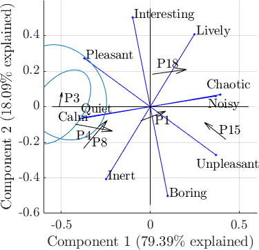
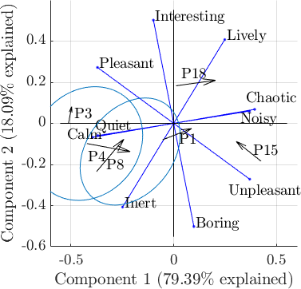
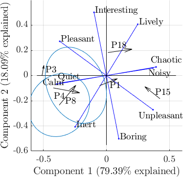
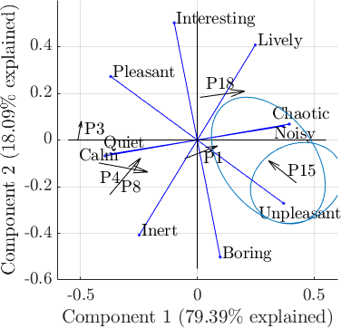
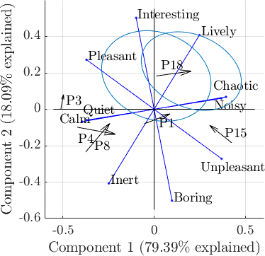

Below are a few examples from of simulated sound scenes using simScene. During the experiment each scene is played at the specified sound level, chosen semi-randomly to cover real-life conditions. For each scene the perceptual time of presence of sources (T: Traffic, V: Voices, B: Birds) can be estimated from the separated source-specific channels obtained during simulation. The full perceptual experiment corpus can be found here.
| Scene name | Ambiance | Audio | Playback Leq (dB) | TT(α, β) | TV(α, β) | TB(α, β) |
|---|---|---|---|---|---|---|
| park03 | Park | 46.6 | 0.00 | 1.00 | 1.00 | |
| quietStreet03 | Quiet Street | 50.6 | 1.00 | 0.07 | 0.23 | |
| noisyStreet01 | Noisy Street | 70.0 | 1.00 | 0.86 | 0.05 | |
| veryNoisyStreet26 | Very Noisy Street | 74.5 | 1.00 | 0.00 | 0.26 | |
| place03 | Square | 66.0 | 0.37 | 0.98 | 0.07 |
This table compares the perceptual response between recorded sound scenes and corresponding replicated scenes. The scores shown are the mean and standard deviation of assessments over 23 subjects, with evaluations on a 0-10 Likert scale. Principal component analysis (PCA) plots outline the differences between pairs in the perceptual space resulting from the experiment. Ellipses represent the standard deviations of the participants assessments.
| Location | Type | Audio | Pleasantness (P) | Liveliness (L) | Overall loudness (OL) | Interest (I) | Calmness (C) | Level of passing vehicles (LT, p) | Time of presence of traffic (TT, p) | Time of presence of voices (TV, p) | Time of presence of birds (TB, p) | PCA |
|---|---|---|---|---|---|---|---|---|---|---|---|---|
| P1 | Recorded | 4.43 (±1.50) | 5.17 (±2.31) | 5.74 (±1.63) | 4.35 (±2.42) | 5.00 (±1.98) | 4.83 (±1.75) | 8.17 (±2.27) | 4.70 (±2.34) | 1.39 (±1.27) |  | |
| Replicated | 4.00 (±1.54) | 6.83 (±1.47) | 6.78 (±1.09) | 3.91 (±2.02) | 4.87 (±1.84) | 5.74 (±1.79) | 7.78 (±2.37) | 6.78 (±2.84) | 0.78 (±1.68) | |||
| P3 | Recorded | 7.91 (±1.24) | 4.26 (±2.24) | 4.00 (±1.45) | 5.00 (±1.86) | 8.04 (±1.40) | 0.91 (±1.28) | 2.70 (±3.15) | 3.09 (±2.11) | 9.70 (±0.70) |  | |
| Replicated | 7.65 (±2.23) | 4.70 (±2.75) | 3.70 (±1.82) | 6.00 (±1.95) | 7.74 (±2.16) | 0.57 (±0.84) | 1.65 (±2.01) | 7.09 (±2.78) | 9.48 (±1.12) | |||
| P4 | Recorded | 6.22 (±2.11) | 4.74 (±2.43) | 3.09 (±1.78) | 4.13 (±2.67) | 7.61 (±1.73) | 3.00 (±1.51) | 2.87 (±1.82) | 6.17 (±1.56) | 0.35 (±0.93) |  | |
| Replicated | 5.30 (±1.64) | 4.74 (±1.84) | 4.91 (±1.81) | 3.65 (±2.44) | 6.30 (±1.77) | 3.96 (±1.69) | 8.09 (±2.19) | 4.74 (±2.28) | 0.30 (±1.06) | |||
| P8 | Recorded | 5.87 (±1.82) | 3.22 (±2.04) | 4.04 (±1.49) | 3.35 (±2.31) | 7.17 (±1.83) | 3.04 (±1.52) | 7.48 (±2.97) | 2.70 (±2.34) | 2.61 (±2.35) |  | |
| Replicated | 5.61 (±1.97) | 4.87 (±2.65) | 4.91 (±1.86) | 4.30 (±2.55) | 6.52 (±1.70) | 5.09 (±2.02) | 8.39 (±2.44) | 2.61 (±1.34) | 4.04 (±2.08) | |||
| P15 | Recorded | 1.70 (±1.22) | 7.30 (±2.10) | 8.52 (±0.99) | 1.96 (±1.40) | 3.04 (±1.64) | 8.52 (±1.04) | 9.74 (±0.62) | 2.78 (±2.73) | 0.09 (±0.42) |  | |
| Replicated | 3.04 (±2.60) | 6.78 (±1.76) | 8.00 (±1.81) | 3.13 (±2.53) | 2.96 (±1.11) | 7.91 (±1.68) | 9.61 (±0.89) | 0.83 (±1.59) | 2.83 (±3.19) | |||
| P18 | Recorded | 5.48 (±2.25) | 7.70 (±1.99) | 6.17 (±1.61) | 5.52 (±2.06) | 4.48 (±2.11) | 5.35 (±2.71) | 6.22 (±3.18) | 9.17 (±1.15) | 1.70 (±1.92) |  | |
| Replicated | 4.35 (±2.19) | 8.00 (±1.41) | 7.35 (±1.43) | 5.96 (±2.12) | 3.09 (±2.35) | 6.39 (±1.59) | 8.04 (±1.64) | 8.35 (±1.43) | 0.39 (±0.66) |